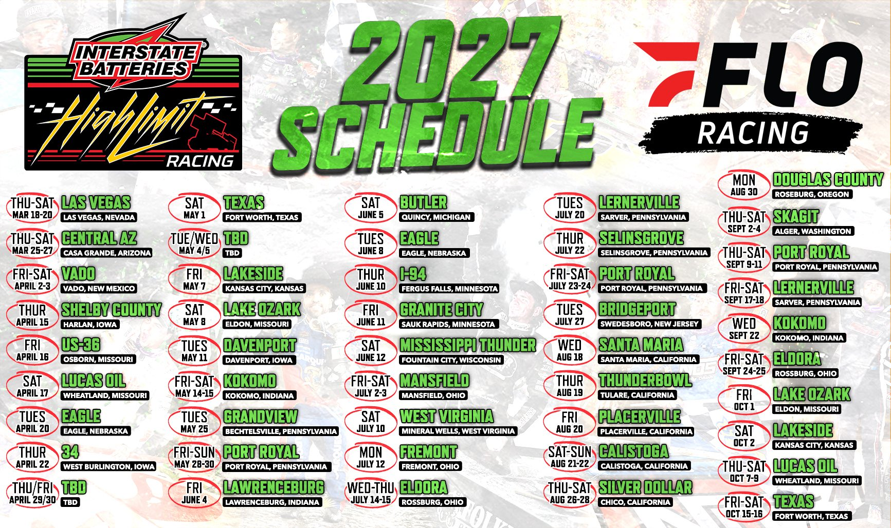

High Limit Racing Posts Record 69-Night 2027 Schedule
The fourth national tour will visit 34 tracks in 19 states, opening March 18–20 at Las Vegas Motor Speedway and closing Oct. 15–16 at Texas Motor Speedway.

Interstate Batteries High Limit Racing released a record 69-night schedule for its 2027 national tour on Monday, Nov. 23, according to a series release. The fourth national season will visit 34 tracks in 19 states, the series said, and all events will be streamed live on FloRacing. The season opens with the Blackjack Bash on Thursday through Saturday, March 18–20, at Las Vegas Motor Speedway and closes with All-In Championship Weekend on Friday and Saturday, Oct. 15–16, at Texas Motor Speedway in Fort Worth.
The series said it is committing nearly $10 million to competitors in 2027, including $2,925,000 in High Roller Club payouts to 10 card-holding teams, up to $1,215,000 through the Joker Fund, an additional $132,500 from the Winner Bonus Pool, and more than $5.5 million in nightly purses. The Las Vegas opener is the first of four High Limit races scheduled parallel to a nearby NASCAR event. The others, according to the release, are the Stockyard Stampede on Saturday, May 1, at Texas Motor Speedway, and High Limit shows at Lakeside Speedway in Kansas City, Kansas, on Friday, May 7, and Saturday, Oct. 2, alongside Kansas Speedway events.
Port Royal Speedway will host the $100,000-to-win Bob Weikert Memorial on Friday through Sunday, May 28–30, a mid-summer doubleheader on Friday and Saturday, July 23–24, and the $60,000-to-win Tuscarora 50 on Thursday through Saturday, Sept. 9–11, according to the release. During Kings Royal week, High Limit will sanction the Double Down Duels and the $100,000-to-win Joker’s Jackpot on Wednesday and Thursday, July 14–15, at Eldora Speedway in Rossburg, Ohio, and the series returns to Eldora for the 4-Crown Nationals on Sept. 24–25 with USAC Midgets, Sprint Cars and Silver Crown. On the West Coast, the $100,073-to-win Gold Cup Race of Champions is scheduled for Thursday through Saturday, Aug. 26–28, at Silver Dollar Speedway in Chico, California, and the $126,000-to-win Skagit Nationals for Thursday through Saturday, Sept. 2–4, at Skagit Speedway in Alger, Washington. The release said an expanded 12-race West Coast stretch begins Wednesday, Aug. 18, at Santa Maria Speedway and includes the return of national 410 sprint cars to Calistoga Speedway for a doubleheader on Saturday and Sunday, Aug. 21–22.
Eight tracks will host their first High Limit events in 2027, the series said: Calistoga; Mansfield Speedway in Mansfield, Ohio, which will run the Freedom 251 on July 2–3, with a High Limit and Lucas Oil Late Model Dirt Series doubleheader on Friday, July 2, and a $51,000-to-win High Limit finale on Saturday, July 3; US-36 Raceway in Osborn, Missouri, on Friday, April 16; I-94 emr Speedway in Fergus Falls, Minnesota, on Thursday, June 10; Granite City Motor Park in Sauk Rapids, Minnesota, on Friday, June 11; Mississippi Thunder Speedway in Fountain City, Wisconsin, on Saturday, June 12; West Virginia Motor Speedway in Mineral Wells, West Virginia, on Saturday, July 10; and Selinsgrove Speedway in Selinsgrove, Pennsylvania, on Thursday, July 22. After a hiatus, 34 Raceway in West Burlington, Iowa, returns on Thursday, April 22, Lake Ozark Speedway in Eldon, Missouri, on Saturday, May 8, and Friday, Oct. 1, and Bridgeport Motorsports Park in Swedesboro, New Jersey, on Tuesday, July 27, according to the release.
The release also listed the $55,555-to-win Eagle Nationals on Tuesday, June 8, at Eagle Raceway, the $25,000-to-win Don Martin Memorial Silver Cup on Tuesday, July 20, at Lernerville Speedway in Sarver, Pennsylvania, the $26,000-to-win Rayce Rudeen Foundation Race on Friday and Saturday, May 14–15, at Kokomo Speedway, Lernerville’s Commonwealth Clash on Friday and Saturday, Sept. 17–18, and the 17th annual Jesse Hockett / Daniel McMillin Memorial on Thursday through Saturday, Oct. 7–9, at Lucas Oil Speedway in Wheatland, Missouri, as the penultimate weekend of the season. Vado Speedway Park will expand to a Friday-Saturday doubleheader on April 2–3. Two weekends on the schedule, April 29–30 and May 4–5, are listed as to be determined.